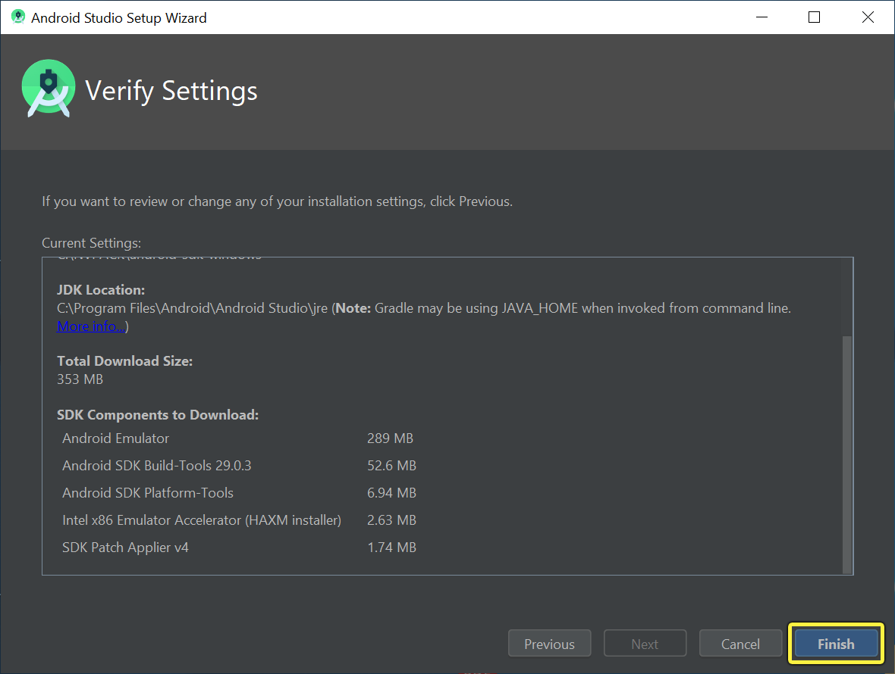
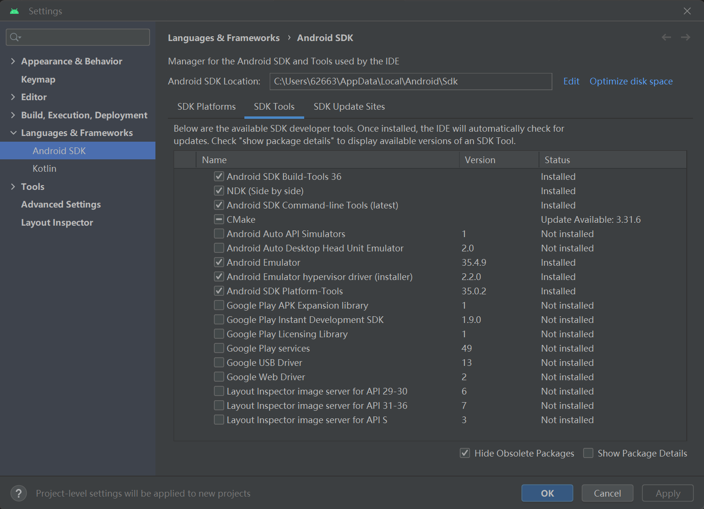
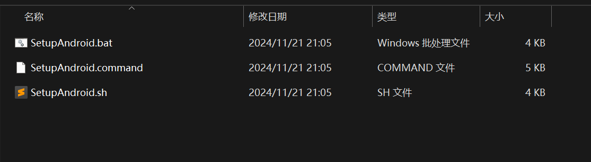
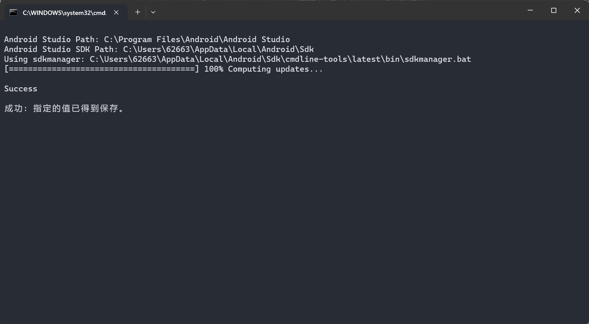
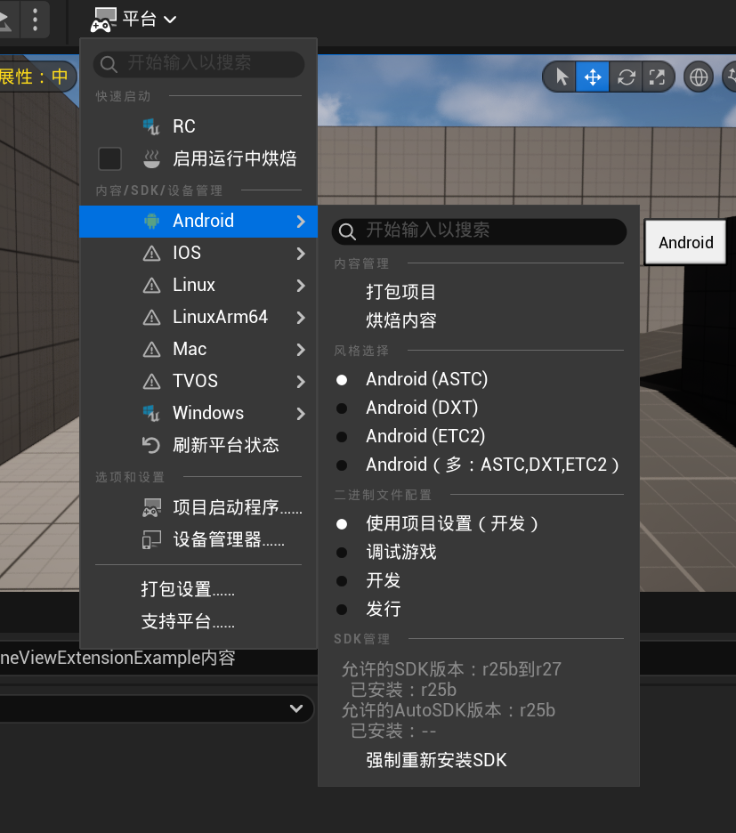
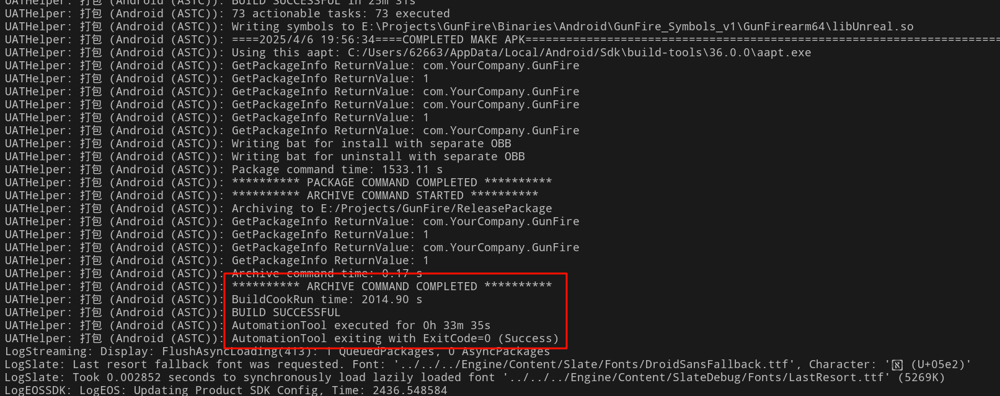
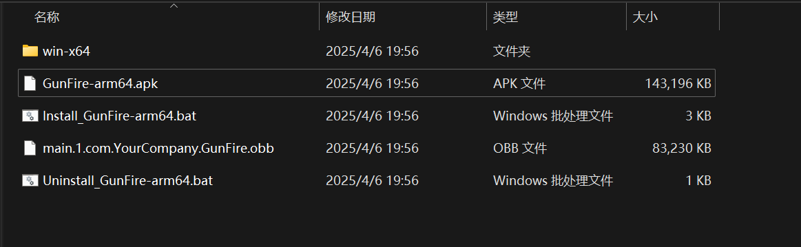
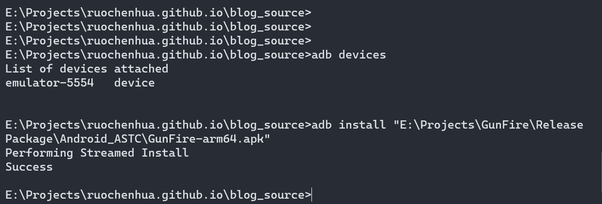
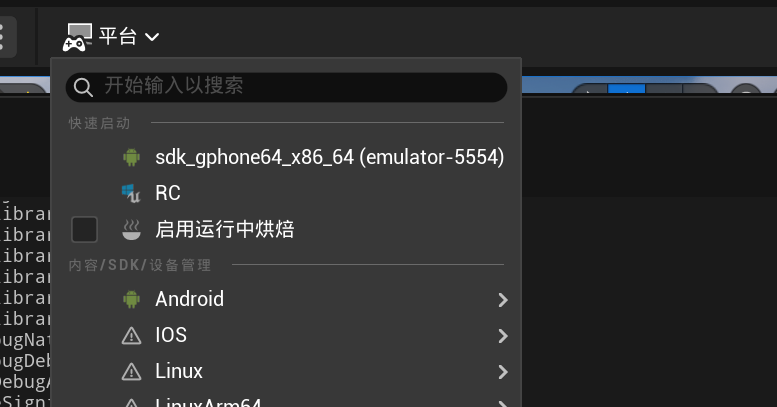

虚幻引擎之Android环境配置
前言
最近工作又出现了变动，去年我这个快十年游戏客户端和引擎开发经验的被调去做AI后端，迷茫了一年后今年又要被调去做安卓Native C++开发了，真的是这两年转的方向比我原来工作七八年的时间都要多。
不过至少安卓Native C++开发比后端开发更加贴合我的工作了，说不定也是件好事。周末闲来无事，想着我好像从来没有自己构建过UE的安卓工程，打算来走走这个流程。
构建安卓环境
Android Studio
要构建安卓包，首先需要下载Android Studio，在官网下载后安装即可。
安装完运行Android studio，第一次打开会做Studio的初始化，需要安装一些默认的组件，选择需要的（一般是提示的都选了）的后等待下载安装完成即可。

然后我们会进到Android Studio的欢迎界面，由于我们一般不用Android Studio来开发UE的工程，这里我们不打开我们的C++代码目录，而是直接打开More Actions->SDK Manager，在弹出来的设置界面中，选择SDK Tools，勾选NDK(Side by side)和Android SDK Command-line Tools(latest)，然后点击Apply或者OK，Android Studio会自动安装对应的NDK和SDK命令行工具。

运行虚幻引擎设定脚本
好了，Android Studio的部分就到这了，接下来我们要打开引擎的安装路径，找到Engine/Extra/Android目录。这个目录下面有三个名为SetupAndroid的脚本，后缀为.bat是Windows平台下的脚本，.sh是Linux下，.command是MacOS的脚本。

运行对应系统的脚本，这个脚本会自动配置虚幻引擎构建安卓平台所需要的内容，并且会自动下载缺少的部分。

（注：上面这张图是我已经设定好一次后再运行一次脚本的结果，可能和第一次运行的表现不一样，但是结果返回都是成功。）
当脚本跑完之后，我们需要重启电脑，保证配置生效。
虚幻引擎构建安卓包
然后打开对应的虚幻引擎项目，在平台->Android中选择打包项目：

和构建Windows包类似，你需要选择一个目录，然后编辑器会自动烘焙、构建对应的APK包。
这里我们可以看到有几个选项：ASTC、DXT和ETC2，这是指定打包的纹理压缩格式。
- ASTC：适用于对图像质量要求较高、纹理复杂度较大的项目，如 AAA 级游戏、虚拟现实（VR）和增强现实（AR）应用等。由于其高压缩率和高质量的特点，ASTC 可以在不牺牲太多画质的情况下减少纹理数据的存储空间。
- DXT：在 PC 游戏开发中仍然被广泛使用，特别是对于那些需要兼容旧显卡的项目。由于其在 PC 平台上的广泛支持，DXT 格式可以确保游戏在各种硬件环境下都能正常显示。
- ETC2：主要用于移动游戏和应用开发，特别是在 Android 平台上。由于大多数 Android 设备支持 ETC2，使用该格式可以确保游戏在移动设备上具有良好的性能和兼容性。
根据项目自身选择合适的纹理格式，然后就是等待了，如果需要烘焙的资源比较多的话，时间可能会比较久。比如在我的ROG枪神12笔记本上，第一人称射击模板项目打包就用了33分钟，

打包的输出结果如下，你可以使用APK包安装到安卓环境上进行测试。

安装到安卓环境可以使用adb命令，用
adb devices
命令可以查看当前环境下的安卓设备，然后使用
adb install
命令将apk安装到设备上。

No Google Play Store Key (No OBB found and no store key)
装完包，app打开可能会出现上面这个报错，在网上查了下可以通过将项目设定 > 平台/Android > Package game data inside .apk打开解决（参考资料2），不过这个可能并不是最终的原因，需要进一步的调查。
直接快速启动
虚幻引擎还提供了直接快速启动的方式，也就是在检测到本地的安卓设备后（我使用的是Android Studio的模拟环境），可以从平台选择对应的设备快速打开：

这样极大的便利了安卓开发流程，并且Log可以在电脑上直接看到，推荐这种做法。

结语
好了，这就是基础的虚幻引擎安卓打包流程了，其实这么看来虚幻项目在安卓上的流程还是比较简单的，当然难的是在实实在在的项目开发上，这就是我后面需要慢慢学习的东西了。
参考资料